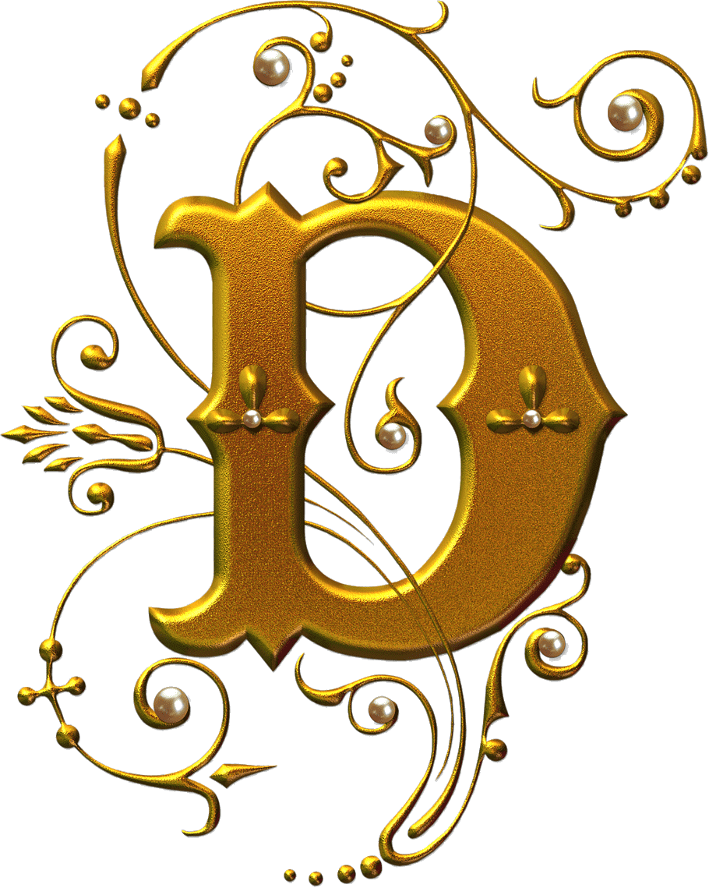

The letter D.

The letter D
D is a letter that has retained the fourth place in the alphabet from the earliest point at which it appears in history. It corresponds to Semitic daleth and Greek delta (Δ). The form is thought to derive from an early pictograph, possibly Egyptian, indicating the folding door of a tent.
Learn more about the letter D on wikipedia